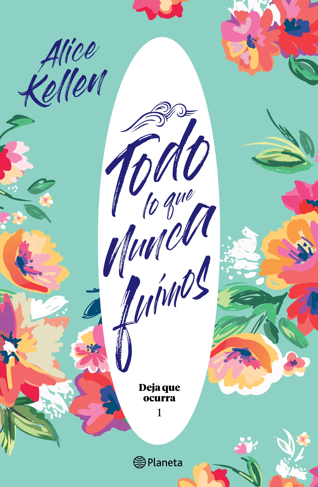

Todo lo que Nunca Fuimos by Alice Kellen
Sinopsis
Primera parte de la bilogía 'Deja que ocurra' de Alice Kellen: Leah está rota. Leah ya no pinta. Leah es un espejismo desde el accidente que se llevó a sus padres. Axel es el mejor amigo de su hermano mayor y, cuando accede a acogerla en su casa durante unos meses, quiere ayudarla a encontrar y unir los pedazos de la chica llena de color que un día fue. Pero no sabe que ella siempre ha estado enamorada de él, a pesar de que sean casi familia, ni de que toda su vida está a punto de cambiar. Porque ella está prohibida, pero le despierta la piel. Porque es el mar, noches estrelladas y vinilos de los Beatles. Porque a veces basta un deja que ocurra para tenerlo todo.
Want this book?
You can buy it here.About Alice Kellen
Alice Kellen nació en Valencia en 1989. Es una joven promesa de las letras españolas que acostumbra a vivir entre los personajes, las escenas y las emociones que plasma en el papel. Es autora de las novelas Sigue lloviendo, El día que dejó de nevar en Alaska, 33 razones para volver a verte, 23 otoños antes de ti, 13 locuras que regalarte, Llévame a cualquier lugar, El chico que dibujaba constelaciones, la bilogía Deja que ocurra: Todo lo que nunca fuimos y Todo lo que somos juntos, Nosotros en la luna y Las alas de Sophie. Es una enamorada de los gatos. Y adicta al chocolate y a las visitas interminables a librerías.